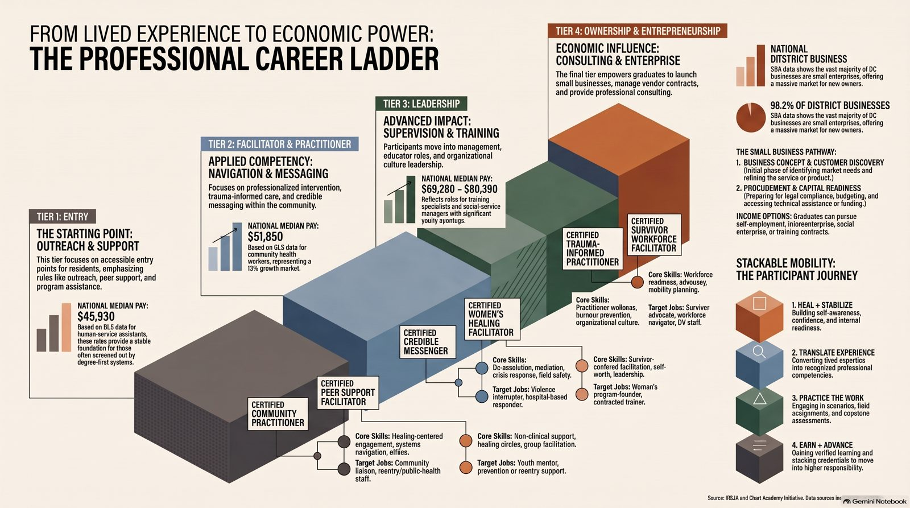

National credentials · SOC 21-1093
Credentials
Each course prepares you for a nationally recognized credential that employers know. Here is what each credential is, who awards it, how you qualify, and how your course hours help you get there.
Course 1 · Certified Community Practitioner
Human Services-Board Certified Practitioner (HS-BCP)
| Primary credential | Human Services-Board Certified Practitioner (HS-BCP) |
|---|---|
| Administered by | Center for Credentialing & Education (CCE) |
| Occupation | SOC 21-1093 Social and Human Service Assistants |
| Labor market | Projected to grow 30%, with about 182 openings each year |
| Projected starting wage | About $40,000 a year, the first rung on a ladder toward Tier 2 practitioner and Tier 3 leadership roles |
| Target jobs | Community liaison, case management aide, resource navigator, reentry or public-health outreach staff |
Module 8, HS-BCP Exam Readiness, walks you through practice questions, test strategies, and your personal credential plan.
Course 2 · Certified Survivor Workforce Facilitator
DSP-I Certification (NADSP)
| Primary credential | DSP-I Certification (Direct Support Professional, Level I) |
|---|---|
| Administered by | National Alliance for Direct Support Professionals (NADSP), through the NADSP E-Badge Academy |
| Occupation | SOC 21-1093 Social and Human Service Assistants |
| Labor market | Relevant to reentry, social services, and workforce-readiness roles |
| Projected starting wage | About $40,000 a year, with a path to DSP-II, DSP-III, and Tier 3 leadership roles |
| Target jobs | Survivor advocate, workforce navigator, direct support professional, domestic violence program staff |
Getting there
Your path to the credential
- Week one: meet with your instructor to map your personal path, based on your education and work experience.
- Check the requirements on the official site: CCE for the HS-BCP or NADSP for the DSP-I.
- Gather your documents: transcripts, proof of work experience, and your course completion certificate.
- Apply, and ask your instructor about help with fees.
- Prepare: study your weakest areas for the HS-BCP exam, or earn your E-Badges for the DSP-I.
- Earn it, and keep it current with continuing education.
Where this leads
The professional career ladder
Tier 1 · Entry
Outreach, peer support, and program assistance.
Tier 2 · Practitioner
Facilitation, navigation, intervention, and case management.
Tier 3 · Leadership
Supervision, management, and training others.
Tier 4 · Enterprise
Consulting, government contracting, and social enterprise ownership.
Both courses are entry points. Your credential is the first step on a ladder, not the last.

